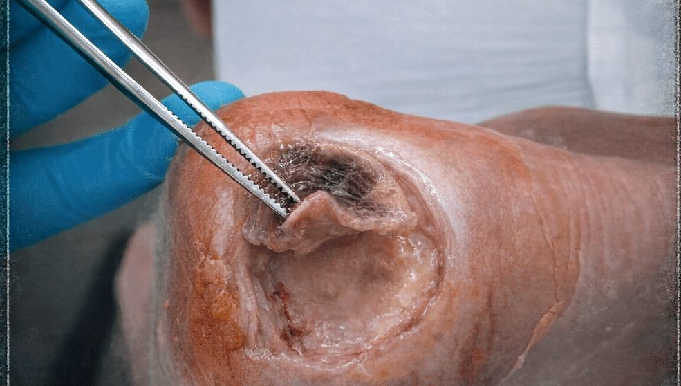
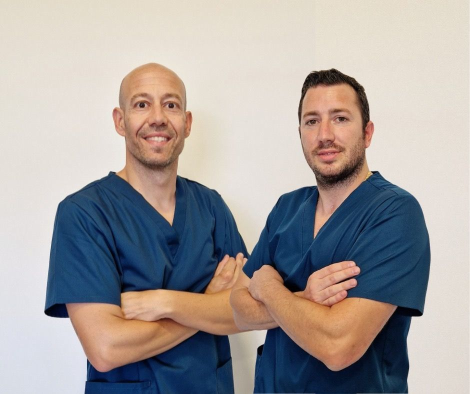

Úlceras, biofilm, esfacelos, terapia de presión negativa. Lo que no te enseñaron en la carrera, explicado con casos reales por dos enfermeros con más de 10 años en Hospitalización a Domicilio.
Estas son las heridas que vas a aprender a tratar. Pulsa sobre cada caso para verlo.

Dos enfermeros especialistas en el cierre de heridas de difícil cicatrización. Más de 10 años juntos en Hospitalización a Domicilio les enseñaron lo que la carrera no cuenta.
Por eso todo concepto teórico va apoyado en un caso real.
Conócelos[Testimonio real de una alumna, con su permiso]
[Testimonio real de una alumna, con su permiso]
[Testimonio real de una alumna, con su permiso]